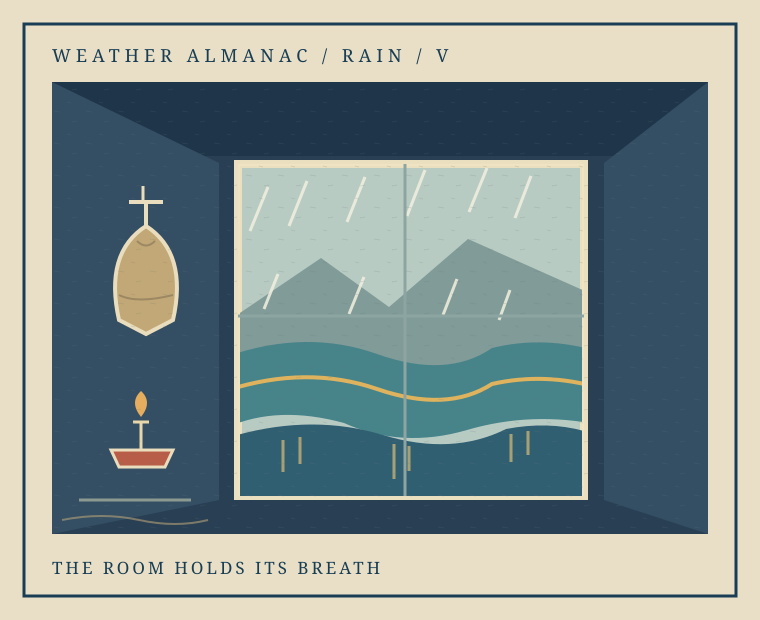
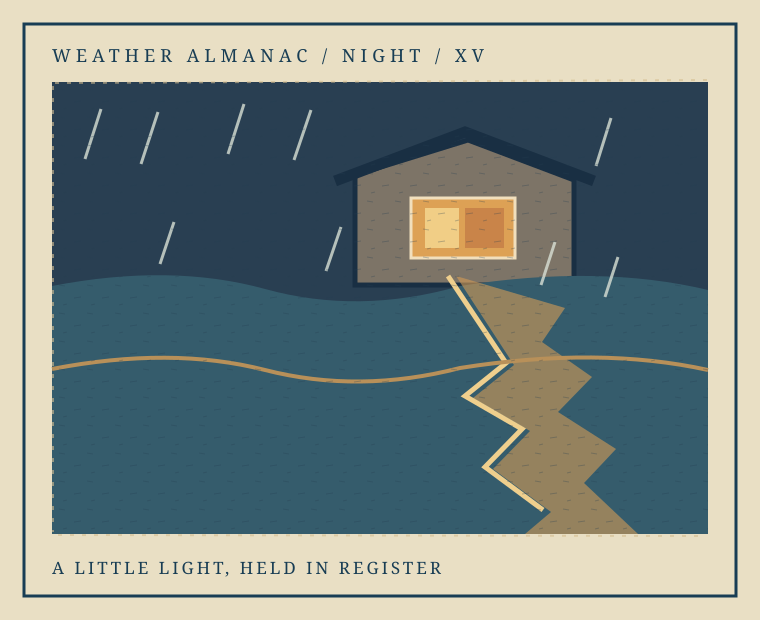
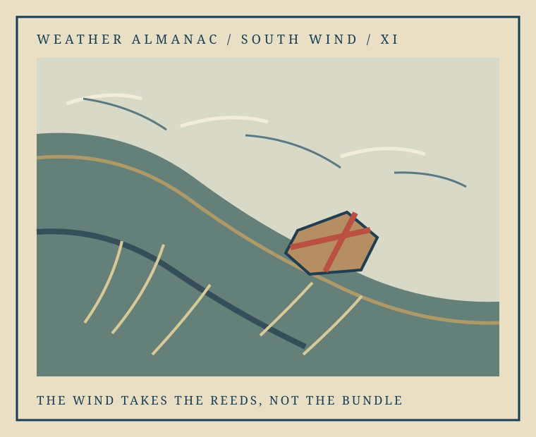

Weather Almanac · Rain / Night
A room, then its light
First we look out through rain from an inn room. Then, across the water, that small warmth loosens into the current.

VThe Room Holds Its Breath
An empty cape and a low lamp keep the weather close to a life just outside the frame.

XVA Little Light, Held in Register
From the far bank, rain breaks the room's gold into separate impressions on the current.
Weather Almanac · South Wind
The Wind Takes the Reeds, Not the Bundle
A slope opens into the gust. Reeds bend through the frame while the tied bundle holds its small ground.
